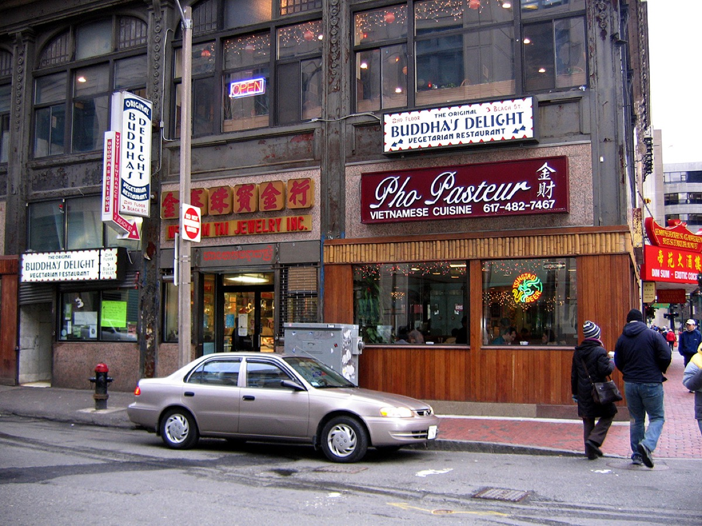

The cheap food in Boston that locals actually eat: slices, dumplings, pho, tacos, kebabs and roast beef, with addresses, T stops, what to order and what it costs.
Spots18
Under $108
Cheapest$2
North End Hanover Street at lunchUnder $5 Arancini and a slice
All on the T
18 spots
The short answer
The 10 best cheap eats in Boston
By no bad days club, Boston · Updated September 8, 2026 · 14 min read
Boston has a reputation as an expensive place to eat, and at the sit-down level it has earned it. But the city's best cheap food has never been in the dining rooms. It is in a cash-only Sicilian bakery on Hanover Street that sells out by 2pm, in a Chinatown noodle shop where the lamb is hand-pulled in front of you, in the Vietnamese sandwich trucks parked outside South Station, and in a hot dog stand on a causeway in South Boston that has not meaningfully changed since 1951.
This guide lists 18 cheap eats in Boston where a real meal costs under about $15, plus a couple of honorable mentions that run a few dollars over but are too good to leave out. Every entry has the address, the nearest T stop, what to order and what it should cost. The list is organized by neighborhood first, then by cuisine, with separate sections on the student-area strips in Allston and Cambridge, the food halls and trucks, and where to eat cheap late at night.
Prices are as of September 2026 and will drift upward. Hours at the small family places change without notice, and a few are cash-only, so check before you cross the city for one of them.
01 · Downtown & Chinatown
Cheap eats Downtown and in Chinatown
Downtown Crossing and Chinatown sit next to each other and between them have the densest concentration of cheap lunch in the city. All of these are within five minutes of Downtown Crossing or Chinatown stations.
Gene's is a small, bare room where the specialty is Xi'an-style food from northwest China: hand-pulled noodles made to order, cumin lamb, and the flatbread sandwiches (rou jia mo) the shop is named for. The number 8, hand-pulled noodles with cumin lamb, chili oil and garlic, is one of the best cheap plates in Boston. Portions are large. It is a lunch-hour place for office workers, so the line moves fast and the room empties by 2pm.
Hours Weekday lunch and early evening; check hours
Local tip · The noodles come very spicy by default. Ask for medium if you are not sure, and grab napkins; the cumin lamb sandwich is not a tidy meal.
#2
02
Chinatown pho
Pho Pasteur
682 Washington St, ChinatownTChinatown$13–16

photo: zozolka, Wikimedia Commons (CC BY 2.0)
Pho Pasteur is the Chinatown pho institution: a big, brisk dining room where a large bowl of beef pho arrives within minutes of sitting down and easily feeds one hungry person. The rare beef and brisket pho is the standard order; the bun (vermicelli bowls) and rice plates are just as good and a little cheaper. It is the place locals send you for a cheap, hot, fast dinner before a show in the Theater District a block away.
Hours Daily, lunch through late evening
#4
03
Freedom Trail lunch
Falafel King
260 Washington St, DowntownTStateUnder $10 · $8–12
Falafel King is a counter a few steps from the Old State House, which makes it the cheapest lunch on the Freedom Trail by a wide margin. The falafel is fried to order and stuffed into a pita with hummus, salad and hot sauce for under $10; the shawarma and the plates run a few dollars more. It is a takeout operation with almost no seating, so carry it to the benches at Post Office Square or down to the Greenway.
Hours Weekday lunch; check hours
#10
04
Turkish counter
Boston Kebab House
30 Bromfield St, DowntownTPark Street$10–15
A Turkish counter on a side street off Downtown Crossing, Boston Kebab House does what its name says: chicken and lamb kebabs, doner, falafel and a good lentil soup, served in a wrap or over rice with salad. The doner wrap is under $12 and filling. It is a favorite of the Downtown lunch crowd, so expect a line from noon to 1pm and an empty room otherwise.
Hours Weekday lunch and early evening; check hours
05
Honorable mention
Sam LaGrassa's
44 Province St, DowntownTPark Street$16–20
Sam LaGrassa's has been making the best pastrami sandwich in Boston since 1968, and it is on this list with an asterisk: the sandwiches are over $15 now. They are also enormous, easily two meals, which brings the math back into cheap-eats territory. The Famous Rumanian Pastrami is the one. It is weekday lunch only, cafeteria-style, and the line at 12:30 reaches the door.
Hours Weekday lunch only
Falafel King sits right on the Freedom Trail, a few steps from the Old State House. Our Freedom Trail guide maps the rest of the walk so you know where to eat along the way.
The North End is known for $30 pasta, but the cheapest great lunch in Boston is here too, and it has been for fifty years.
Hanover Street · NewtonCourt, CC BY-SA 4.0
06
Cash-only classic
Galleria Umberto
289 Hanover St, North EndTHaymarketUnder $10 · $2–4/item, cash only
Galleria Umberto is a Sicilian bakery that opens at 11, sells thick square slices of pizza, arancini, panzarotti (fried potato croquettes) and calzones from behind a counter, and closes the moment the trays are empty, which is usually early afternoon. The slice is about $2.50 and it is the best plain cheese slice in the city: thick, oily in the right way, with a sweet tomato sauce. An arancino and a slice with a paper cup of wine is a full lunch for under $8. The line forms before opening and moves fast. Cash only, no exceptions.
Hours Mon–Sat lunch only, roughly 11am until sold out (often by 2pm)
Local tip · Come at 11:15. By 12:30 the arancini are gone and by 1:30 the doors may be shut. If you miss it, Pauli's on Salem Street has arancini all day.
#1
07
Arancini
Pauli's arancini
65 Salem St, North EndTHaymarketUnder $10 · $6–8
Pauli's is a sandwich shop best known for an absurdly large lobster roll, but the cheap order is the arancini: fist-sized rice balls stuffed with ragu and peas or with cheese and spinach, fried to order and cut in half so the filling shows. One is a snack, two is lunch, and either costs less than a slice of anything on Hanover Street with a table. There are a few stools, and the shop is open into the evening, which Galleria Umberto is not.
Hours Daily, lunch through evening
Bakery-hopping on Hanover Street pairs naturally with the weekend meal it leads into. Our best brunch in Boston guide has the sit-down side of the North End.
El Pelón has been the Fenway neighborhood's taqueria since 1998, tucked on a residential street behind the ballpark. The fish tacos, grilled or fried, are the reason people come; the El Guapo burrito (steak, plantains, black beans) is the reason they come back. A taco is around $5, a burrito around $12. It is small, busy on game days, and one of the few good cheap meals within a five-minute walk of Fenway Park.
Hours Daily, lunch through evening
#6
09
Dumplings
Mei Mei Dumplings
506 Park Dr, FenwayTFenway$10–15
Mei Mei started as a food truck, became a restaurant, and has since reinvented itself around dumplings: a small shop selling hand-folded dumplings, frozen and cooked, plus the scallion pancake sandwich that made the truck famous (the Double Awesome, with cheddar and pesto, is still the order if it is on the board). Hours are shorter than a regular restaurant and the format has changed more than once, so check the current schedule before heading over.
Hours Limited hours; check before you go
10
Tacos
Chilacates
224 Amory St, Jamaica Plain (also South End and Roxbury locations)TStony BrookUnder $10 · $4–13
Chilacates is a Mexican counter that started in a tiny JP storefront and now has several locations, and it makes the best tacos in Boston for the money: al pastor, carnitas, barbacoa and more on doubled corn tortillas, around $4 each. The burritos and quesadillas are big and under $13, and the salsa bar is serious. The Amory Street original is a two-minute walk from Stony Brook station on the Orange Line.
Hours Daily, lunch through evening
#5
11
Castle Island
Sullivan's Castle Island
2080 William J Day Blvd, South BostonBus 9 or 11 from Broadway, or a 25-minute walk from AndrewUnder $10 · $3–4 for a dog
Sullivan's has stood at the entrance to Castle Island since 1951, and it is the definition of a cheap Boston meal: a hot dog for a few dollars, fries, a frappe, eaten at a picnic table with Fort Independence on one side, the harbor on the other, and planes landing at Logan overhead. The fried clams and the lobster roll cost more, but you are here for the dog. Open seasonally; the opening weekend in late February is a local rite of spring.
Hours Seasonal, roughly late February to late November; check dates
Kelly's is outside Boston proper, but it invented the North Shore roast beef sandwich in 1951 and the original stand on Revere Beach is a 20-minute Blue Line ride from Downtown. Thin-sliced rare roast beef on an onion roll, ordered "three-way" with barbecue sauce, mayo and American cheese, eaten on the seawall across the street. The sandwich has crept up in price; the fried clams and onion rings push the bill higher. It is still one of the best cheap trips you can make on the T.
Hours Daily, open late; check hours
Castle Island isn't just a hot dog stand; it's one of the better free harbor views in the city. See it alongside the rest of our best views in Boston guide.
Student-area cheap eats: Allston, Harvard Square and Central Square
Boston has a quarter of a million college students, and the neighborhoods they live in are where the cheap food is best. Allston is the champion; Cambridge's Red Line squares are close behind.
Harvard Square · John Phelan, CC BY 3.0
13
Student favorite
Shanghai Gate, Allston
204 Harvard Ave, AllstonTHarvard Ave$10–16
Shanghai Gate is a small Shanghainese restaurant on the Harvard Avenue strip and one of the best cheap dinners in the city. Pan-fried pork buns (sheng jian bao), scallion pancakes, dan dan noodles, lion's head meatballs and a long menu of dishes that mostly land between $10 and $16 and are meant to be shared. Bring three friends, order six things, and the bill still comes in around $15 a head. Allston around it is wall-to-wall Korean, Chinese, Vietnamese and Brazilian food at similar prices.
Hours Lunch and dinner; check days
#9
14
Soup dumplings
Dumpling House, Central Square
950 Massachusetts Ave, CambridgeTCentral$10–16
Dumpling House is the Central Square sibling of Chinatown's dumpling specialists, and the soup dumplings (xiao long bao) are the order: eight in a steamer for around $12. The pan-fried pork dumplings, the scallion pancakes and the Shanghai-style noodles round it out. The dining room is large for a cheap place, which means the wait is shorter than the food deserves. It is a two-minute walk from Central station.
Hours Daily, lunch and dinner
#3
15
Vegetarian
Clover Food Lab
7 Holyoke St, Harvard Square; also Kendall, Downtown and other locationsTHarvardUnder $10 · $9–14
Clover began as an MIT food truck and is now a small chain of vegetarian fast-food restaurants, and its chickpea fritter sandwich (falafel, hummus, pickles and salad in a warm pita) is a Cambridge staple for under $12. The menu changes with the season, the rosemary fries are excellent, and the Harvard Square location is the easiest cheap meal in the Square. It is entirely vegetarian, which nobody seems to notice.
Hours Daily, morning through evening
16
Student burrito
Anna's Taqueria
822 Somerville Ave, Porter Square; also Coolidge Corner, Davis Square, MIT and Beacon HillTPorterUnder $10 · $9–13
Anna's has been the burrito of Boston students since 1995. It is a Mission-style burrito assembled fast on a steam table, foil-wrapped, and priced around $10 to $12 with a drink. The carnitas and the grilled chicken are the standards; get the super with guacamole. There are locations near most campuses. It is not gourmet, it is not trying to be, and on a Tuesday night it is exactly what you want.
Yume Wo Katare serves one thing: a giant bowl of Jiro-style pork ramen with a mountain of bean sprouts, thick noodles and slabs of pork, and the whole restaurant is built around finishing it. It runs a couple of dollars over our limit, but it is easily a day's worth of food, and the experience, a line down Mass Ave and the staff cheering your empty bowl, is unlike anything else in the city. Go hungry, go early, and check the days they are open.
Hours Evenings, limited days; check schedule
Clover in Harvard Square is an easy, cheap way to start an evening. Pair it with an idea from our Boston date ideas guide.
No cheap eats under $10 in this neighborhood. Try another one.
05
Cheap eats in Boston by cuisine
Pizza and Italian: Galleria Umberto for the slice, Pauli's for arancini. For a full pizza on a budget, the North End's takeout counters and Allston's pizzerias are your friends; our best pizza in Boston guide covers the whole range.
Chinese: Gene's for Xi'an noodles Downtown, Dumpling House for soup dumplings in Central Square, Shanghai Gate for Shanghainese in Allston, Mei Mei for dumplings in Fenway. Chinatown itself has a dozen more, most of them in the same price range.
Vietnamese: Pho Pasteur for pho in Chinatown; Bon Me for the modern, sandwich-and-bowl version from the trucks. Dorchester's Fields Corner, on the Red Line, has the most Vietnamese food in the city and is the cheapest neighborhood in Boston to eat well, if you have the time.
Mexican: Chilacates for tacos, El Pelón for fish tacos and the El Guapo, Anna's for the student burrito. East Boston, one Blue Line stop from Downtown, has the best and cheapest Salvadoran and Mexican food in the city along Bennington and Meridian Streets.
Middle Eastern and Turkish: Falafel King and Boston Kebab House Downtown, both under $12 for a wrap. Clover's chickpea fritter is the vegetarian version in Cambridge.
New England classics: Sullivan's on Castle Island for a hot dog by the harbor, Kelly's in Revere for roast beef, Sam LaGrassa's for pastrami. For fried clams on a budget, Sullivan's is the only place on this list that gets close.
Japanese: Yume Wo Katare for ramen. Porter Square's Porter Exchange building, a short walk away, has a hallway of small Japanese counters (ramen, curry, sushi, bento) that is one of the best cheap-food secrets in Cambridge.
06
Food halls and food trucks in Boston
Food halls put a dozen cheap-ish options under one roof, which is useful for groups that cannot agree. Trucks are the cheapest lunch Downtown on a weekday.
18
Trucks & shops
Bon Me trucks and shops
Trucks rotate through Dewey Square (South Station), Copley Square, Boston Common and more; shops in Fort Point, Kendall and elsewhereTSouth Station$11–14
Bon Me started as a food truck in 2011 and now runs a fleet plus several storefronts. The banh mi-style sandwiches, rice and noodle bowls with lemongrass chicken, spice-rubbed pork or miso-braised tofu, all land in the $11 to $14 range and are the best lunch you can get from a truck in Boston. The truck schedule is posted online each week; Dewey Square outside South Station is the most reliable weekday spot.
Hours Weekday lunch for trucks; shops daily
#7
Food hall
Address
Nearest T stop
Typical dish price
Notes
Boston Public Market
100 Hanover St, Haymarket
Haymarket (Orange/Green)
$6–15
Local vendors, produce, cheapest snacks; closed Mondays in some seasons, check
Time Out Market
401 Park Dr, Fenway
Fenway (Green D)
$12–20
Chef-driven stalls; busy on game days
High Street Place
100 High St, Financial District
South Station or Aquarium
$12–18
Weekday lunch crowd, quieter weekends
Hub Hall
80 Causeway St, North Station
North Station (Orange/Green)
$12–18
Best before Bruins and Celtics games
Quincy Market
206 S Market St, Faneuil Hall
Government Center or Haymarket
$10–20
Tourist pricing; fine for chowder in a bread bowl
A food hall is one of the easiest indoor plans in the city when the weather turns. See more of them in our rainy day in Boston guide.
Food trucks cluster at Dewey Square, Copley Square, the Boston Common at Tremont Street, the Greenway and SoWa on Sundays. The city posts schedules; most trucks run weekday lunch from spring to late fall.
07
Late-night cheap eats in Boston
Boston is not a late-night food city. The T stops running around 12:30am, most kitchens close by 10pm, and the cheap-food places close earlier than that. What survives after 11pm is concentrated in three areas.
Chinatown is the reliable one. Several restaurants along Beach Street, Tyler Street and Washington Street stay open until midnight or later, serving Cantonese, Hong Kong-style and Vietnamese food at the same prices as lunch. Pho Pasteur runs later than most cheap places in the city. Hours shift, so check the door or call ahead, but if it is 11:30pm and you are hungry Downtown, walk to Chinatown.
Allston is the second option, with several Chinese, Korean and Taiwanese places on Harvard and Brighton Avenues serving until 11pm or later, and the pizza-by-the-slice counters going later still. Anna's Taqueria locations generally serve into the late evening, which covers Porter, Davis and Coolidge Corner.
Revere Beach: Kelly's original stand has historically stayed open very late in summer, and the Blue Line runs until around 12:30am. It is the only late-night cheap meal on this list with a beach attached.
Prices as of September 2026; hours change, check before you go. Cash-only places are flagged.
Place
Neighborhood
Nearest T stop
Order this
Price
Galleria Umberto
North End
Haymarket
Slice and an arancino
$2–4 per item, cash only
Pauli's
North End
Haymarket
Arancini
$6–8
Gene's Chinese Flatbread
Downtown
Downtown Crossing / Chinatown
No. 8 cumin lamb noodles
$10–14
Pho Pasteur
Chinatown
Chinatown (Orange)
Beef pho, large
$13–16
Falafel King
Downtown
State (Blue/Orange)
Falafel pita
$8–12
Boston Kebab House
Downtown
Park Street / Downtown Crossing
Doner wrap
$10–15
Sam LaGrassa's
Downtown
Park Street / Downtown Crossing
Rumanian pastrami (split it)
$16–20
El Pelón Taqueria
Fenway
Fenway (Green D)
Fish tacos, El Guapo burrito
$5–13
Mei Mei Dumplings
Fenway
Fenway (Green D)
Dumplings, Double Awesome
$10–15
Chilacates
Jamaica Plain
Stony Brook (Orange)
Al pastor tacos
$4–13
Sullivan's Castle Island
South Boston
Bus 9/11 from Broadway
Hot dog, fries, frappe
$3–4 for a dog; seasonal
Kelly's Roast Beef
Revere Beach
Wonderland / Revere Beach (Blue)
Roast beef three-way
$12–15
Shanghai Gate
Allston
Harvard Ave (Green B)
Pan-fried pork buns, dan dan noodles
$10–16
Dumpling House
Central Square
Central (Red)
Soup dumplings
$10–16
Clover Food Lab
Harvard Square and others
Harvard (Red)
Chickpea fritter sandwich
$9–14
Anna's Taqueria
Porter, Coolidge Corner, Davis, MIT
Porter (Red)
Super burrito
$9–13
Yume Wo Katare
Porter Square
Porter (Red)
The ramen (there is one)
$16–18, cash preferred
Bon Me
Trucks and shops citywide
South Station for Dewey Sq
Lemongrass chicken sandwich
$11–14
Trying to work through all 18 in one visit? That's basically our Freedom Trail challenge with better snacks — check it out for the same idea applied to Boston's landmarks.
09
How to eat cheap in Boston
Eat lunch, not dinner. Many of the best cheap places in this guide are lunch operations: Galleria Umberto, Sam LaGrassa's, Gene's, Falafel King and the trucks. Boston's cheap food is a daytime economy built around office workers and students. Plan your big meal at noon and keep dinner small.
Carry cash. Galleria Umberto is cash only. A few Chinatown and Allston places have card minimums or prefer cash. Twenty dollars in your pocket covers everything on this list.
Follow the students and the office workers. Allston, Central Square, Porter Square and Downtown Crossing are cheap because their customers are. The tourist zones, Faneuil Hall, the Seaport and the waterfront, are not, with the exception of the North End bakeries.
Use the T. Every place here is on or near a subway line, and a $2.40 ride to Allston or Porter Square saves you $20 at dinner compared to eating near your hotel. A 7-day pass is $22.50. Our getting around Boston guide has the details.
Haymarket on Friday and Saturday. The open-air produce market next to the Boston Public Market sells fruit and vegetables at prices that seem like a mistake. If you have a kitchen, it is the cheapest food in the city.
Combine it with free things. Cheap food and free activities go together: Falafel King on the Freedom Trail, Sullivan's at Castle Island, Clover after the free Harvard Art Museums. Our free things to do in Boston and Boston on a budget guides are built for exactly that. For the full set of Boston restaurant and bar guides, start at the Boston food and drink hub.
FAQ
Cheap eats in Boston: common questions
What is the cheapest good meal in Boston?+
A Sicilian slice and an arancino at Galleria Umberto in the North End, which comes to about $6 to $8 and is one of the best lunches in the city. Close behind: a falafel pita at Falafel King downtown for under $10, a hot dog at Sullivan's on Castle Island, and a burrito at Anna's Taqueria for around $10 to $12.
Where do students eat cheap in Boston?+
Allston, around Harvard Avenue and Brighton Avenue, is the cheap-food capital of Boston, with Shanghai Gate and dozens of Korean, Chinese, Vietnamese and Brazilian places. In Cambridge, Central Square has Dumpling House and Clover, Harvard Square has Clover and the Tasty Burger type of counter spots, and Porter Square has Anna's Taqueria and Yume Wo Katare.
Is Boston an expensive city to eat in?+
Sit-down restaurants in Boston are expensive, with dinner entrees commonly $30 and up. Counter-service food is a different story: Chinatown, Allston, the North End's bakeries and the city's taquerias all serve full meals for $10 to $15, and the food halls and trucks put a lot of options in one place at lunch.
Where can I get cheap food in Boston late at night?+
Chinatown is the reliable late-night cheap food neighborhood; several restaurants on Beach Street and Washington Street serve until midnight or later, though hours vary and are worth checking. Anna's Taqueria locations stay open into the evening, Allston has late Chinese and Korean options, and Kelly's Roast Beef on Revere Beach is open late in summer.
Which Boston food halls are worth it?+
Time Out Market in Fenway, High Street Place in the Financial District and Hub Hall at North Station all have a dozen or more vendors with most dishes in the $12 to $18 range. Boston Public Market at Haymarket is more of a farmers market with prepared food, and is the cheapest of the four for a snack. Quincy Market is the tourist one; the food is fine but priced for visitors.
Do cheap restaurants in Boston take cards?+
Most do now, but a few of the best cheap eats are still cash-only or cash-preferred, notably Galleria Umberto. Bring $20 in cash for the North End and Chinatown to be safe, and check the door before you order.